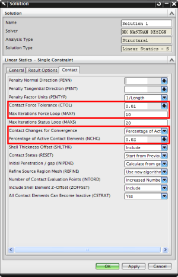

Convergence and chattering are conditions where the contact will not settle on a solution within the allotted number of iterations. This can occur when a small normal load is applied to a relatively stiff contact location.
To address this issue, you can modify these contact solution attributes:
Max Iterations Force Loop — Increase the number of iterations to 20.
Contact Force Tolerance — Increase the tolerance to a maximum value of 0.1.
Contact Changes for Convergence — Change the percentage of active contact elements to 0.01 or less.
